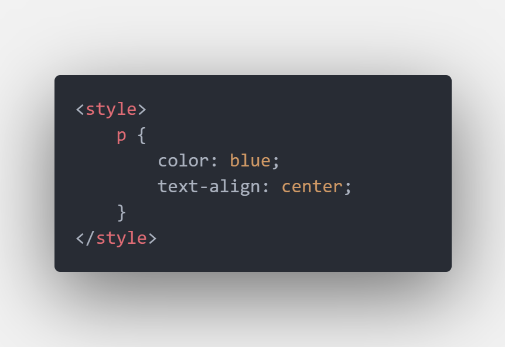
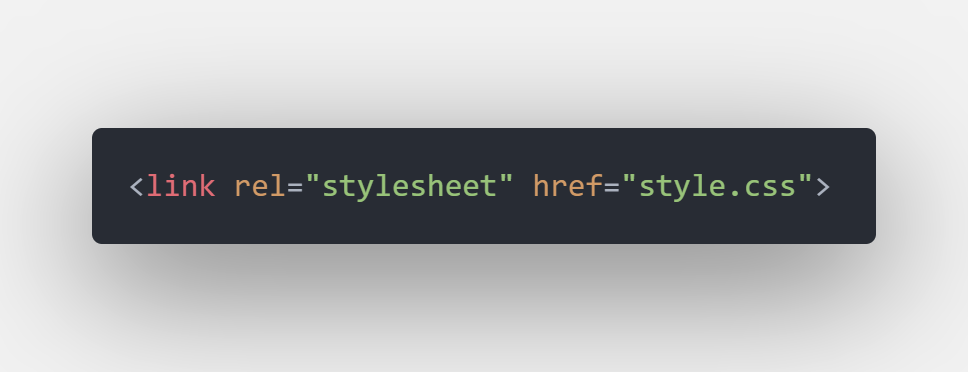
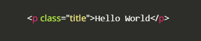
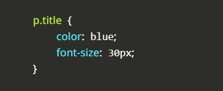
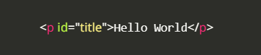
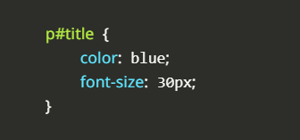

ตัวอย่าง การกำหนดให้ ข้อความใน tag p มีสีน้ำเงินและอยู่ตรงกลาง

3. External Style Sheet
เป็นการเขียน CSS ภายนอกเอกสาร html วิธีนี้จะทำได้ด้วยการสร้างไฟล์เอกสาร CSS ไว้อีกหนึ่งไฟล์ที่มีนามสกุล .css แล้วภายในเขียนคำสั่ง CSS ไว้ทั้งหมด เมื่อต้องการให้สไตล์นี้มีผลกับไฟล์เอกสาร html ก็สามารถเชื่อมโยงไฟล์นั้นๆได้ โดยสร้างโฟล์ไว้สองไฟล์ในโฟล์เดอร์เดียวกัน
ตัวอย่าง html และไฟล์ style.css

การตกแต่งตัวอักษร (Font)
property color - ใช้กำหนดสีตัวอักษร
property font-family - ใช้กำหนดประเภทตัวอักษร
property font-size - ใช้กำหนดขนาดตัวอักษร
การกำหนด Class เเละ ID
การกำหนด Class เเละ ID จะต้องกำหนดใน HTML ไฟล์.html เป็นเหมือนการกำหนดชื่อเล่นหรือชื่อจริงให้ HTML Element การกำหนด Class , ID นั้นจะช่วยในทำให้เราไม่งงในการเขียนตกเเต่งในไฟล์ .css
*** Class สามารถตั้งซ้ำกันในไฟล์ HTML ได้ เเต่ ID ไม่สามารถตั้งซ้ำกันได้ ***
ตัวอย่างการกำหนด Class :
การกำหนด Class ใน CSS เราจะใช้ selector .
Code HTML :

Code CSS ในไฟล์ .css :

ตัวอย่างการกำหนด ID :
การกำหนด ID ใน CSS เราจะใช้ selector #
Code HTML :

Code CSS ในไฟล์ .css :

เพียงเท่านี้ ก็สามารถเริ่มใช้งาน CSS กันได้แล้ว!
เลือกหัวข้อการศึกษา
พื้นฐาน HTML
HTML (Hypertext Markup Language) เป็นภาษามาร์กอัพที่ใช้ในการสร้างโครงสร้างของเว็บเพจ โดยใช้แท็กต่างๆ เพื่อบอกให้เว็บเบราว์เซอร์รู้ว่าเนื้อหาควรแสดงอย่างไร